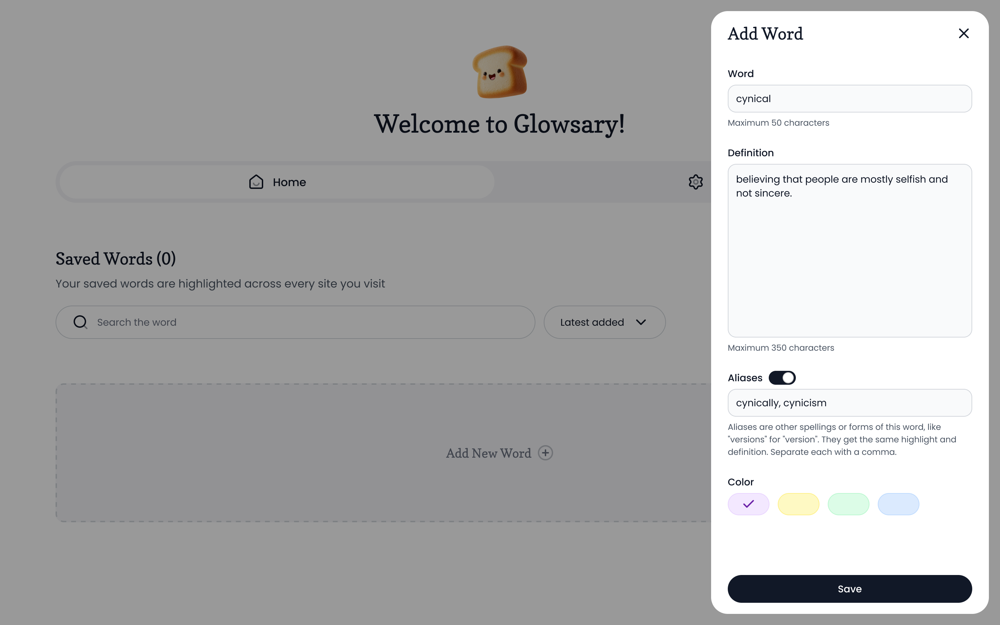
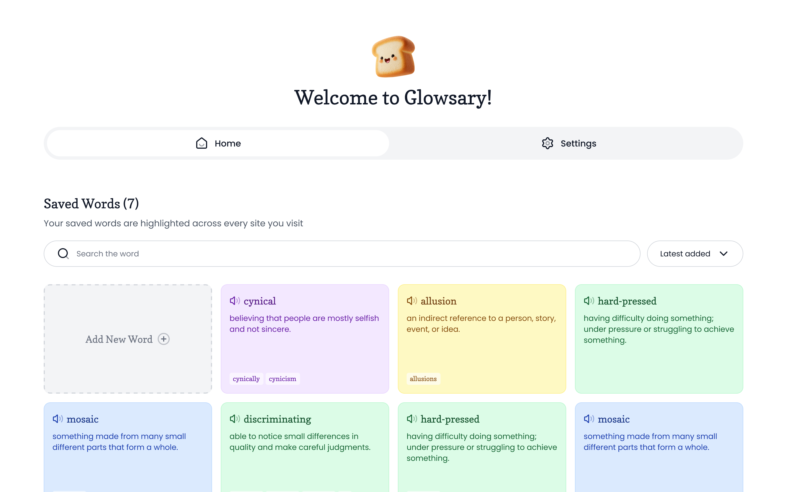
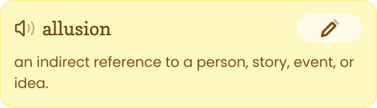

Turn the web into your personal vocabulary notebook.
Save a word once with your own meaning. Glowsary quietly underlines it everywhere you read and shows your definition when you hover. Like Word Wise on a Kindle, except the words are the ones you chose.
No account. No sign-in. Your words stay on your device.
Try it — hover a glowing word
Reading online can feel like a mosaicmosaicsomething made from many small different parts that form a whole. of new words. One article calls a politician cynicalcynicalbelieving that people are mostly selfish and not sincere., another makes an allusionallusionan indirect reference to a person, story, event, or idea. to a novel you never read, and you are hard-pressedhard-pressedhaving difficulty doing something; under pressure or struggling to achieve something. to remember any of them the next day.
This is how your saved words look on every page you read. On a touch screen, tap a word instead.
How it works
Three small moments, repeated every day, until the words are yours.
Save it as you read
Select a word, right-click, and choose "Add word". Write the meaning in your own words, add other forms as aliases, and pick a color.

See it glow everywhere
From now on, that word gets a subtle underline on every site you visit. You recognize it on sight, without doing anything.

Hover to remember
Your definition appears in a small popup next to the word, then gets out of your way. Your reading is never interrupted.

Small features that make words stick
Four colors
Tag each saved word with a color to group them and tell them apart at a glance.
Aliases
Let "version" and "versions" share one definition and one highlight, so every form of the word glows.
Many meanings
The same word can hold several saved definitions. The popup pages through them, newest first.
Hear it spoken
A speaker icon pronounces any saved word out loud, so you learn the sound, not only the meaning.
You stay in control
One switch turns all highlighting off, and you can exclude any site where you want to read normally.
Backup in your hands
Export your whole list as a CSV file anytime, and import it back on any computer.
Private by design.
Everything is stored on your own device. No account, no sign-in, no tracking. Your words never leave your computer.
Make every lookup stick.
Made for self-learners who read English online and want the effort of every lookup to last.
Add to Chrome — it's free